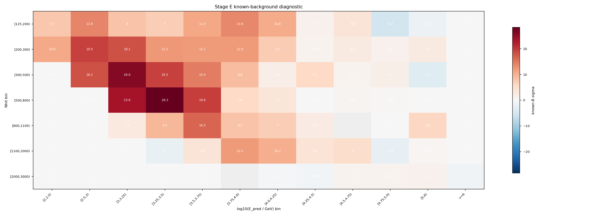
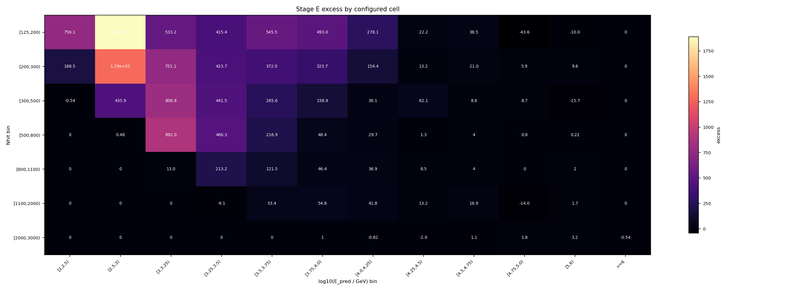
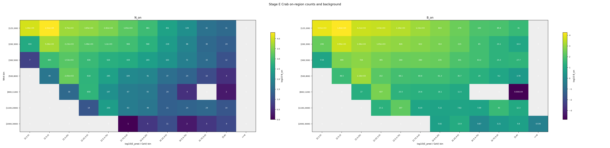
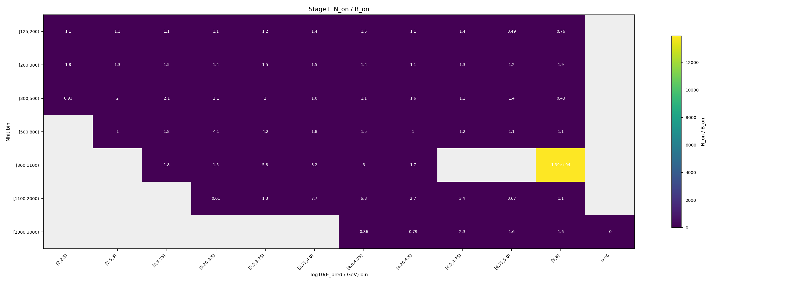

Stage E 信号提取报告
本页把 Stage E 的输出翻译成可读的分析说明：它不是在拟合能谱，而是在每个 (Nhit, log10 E_pred) cell 里统计 Crab 源区计数，并扣除 Stage D 给出的背景期望，得到后续 Stage F forward folding 拟合要使用的信号表。
一句话结论
Stage E 已经在 84 个传入 cell 上完成 Crab on-region 计数。总源区计数 N_on = 67,151，Stage D 背景期望 B_on = 54,210.1，因此总 excess 为 12,940.9，known-background 形式的总诊断显著性为 53.5639 sigma。质量门状态为 passed。
passed。
当前配置要求总 formal sigma 位于
[0, 200] 之间。本次结果为 53.5639，通过质量门，可以作为 Stage F 的输入候选。
为什么要做 Stage E
前面几个阶段各自只解决了问题的一部分：Stage A 给出 MC 响应矩阵，Stage B 给出每个 cell 的 PSF 和积分半径，Stage C 把观测 ROOT 规约成带 RA/Dec/MJD/cell_id 的 parquet，Stage D 估计每个 cell 在 Crab 孔径内应有多少背景。到这里还没有得到“Crab 在每个 cell 贡献了多少信号”。
Stage E 就是这个桥梁：它把观测到的源区计数 N_on 和背景期望 B_on 合成 excess。Stage F 不直接拿所有事件拟合，而是拿 Stage E 产出的逐 cell excess 表，和 Stage A 响应折叠出来的模型预期数做比较。
Stage E 在做什么
ra_mean_deg、dec_mean_deg、cell_id。r_opt_deg，即约 1.58 sigma 的最优积分半径。r_opt，计入 N_on,b。B_on,b，计算 excess_b = N_on,b - B_on,b。本次 Stage D 使用的是 Crab 局部 ROI 背景模型，所以 Stage E 也只在同一套 fiducial ROI 内工作：rho < 6 deg。这保证 N_on 的统计口径和 B_on 的背景口径一致。
具体怎么做的
1. 事件选择和几何
- 源位置固定为 Crab：
RA = 83.63 deg，Dec = 22.01 deg。 - 先按 Stage D 的局部 ROI 约束保留
rho < 6 deg的事件；本次保留3,698,126行，剔除10,726,487行。 - 随后用球面角距离公式计算事件与 Crab 的夹角
sep，每个 cell 判断sep <= r_opt_deg[cell]。
2. 背景和统计量
Stage D 输出的是 direct_expectation，也就是直接背景期望 B_on。它不是传统 off 区计数，因此本报告不把 B_on 强行拆成 alpha × N_off，表格里的 Li-Ma 显示为 n/a。
excess_b = N_on,b - B_on,b- conservative 误差口径：
sqrt(N_on,b + B_on,b) - 本次 formal sigma：
Poisson known-background aggregate diagnostic - known-background 诊断公式：
sign(N_on-B_on) * sqrt(2 * (N_on ln(N_on/B_on) - (N_on-B_on)))
alpha。本次 Stage D 给的是直接背景期望，不是 off 区事件数，所以 Li-Ma 在数学上不适用。这里的显著性是一个诊断量，用来检查信号是否合理；最终能谱结果仍要看 Stage F 之后的拟合和系统误差检查。
结果怎么读
下表每一行是一个输入 cell。Nhit bin 表示 shower size 分箱，log10 E_pred bin 是 ML 预测能量分箱。低 Nhit、低预测能量 cell 统计量最大；高 Nhit、高预测能量 cell 背景很低，但如果仍有明显 positive excess，就对高能端谱形很有价值。
| cell | Nhit bin | log10 E_pred bin | r_opt deg | N_on | B_on | excess | stat err | known-B sigma | Li-Ma |
|---|---|---|---|---|---|---|---|---|---|
| 1 | [125,200) | [2,2.5) | 0.7816 | 10,570 | 9,813.9 | 756.103 | 102.81 | 7.5374 | n/a |
| 2 | [125,200) | [2.5,3) | 0.7211 | 20,098 | 18,208.5 | 1,889.48 | 141.77 | 13.77 | n/a |
| 3 | [125,200) | [3,3.25) | 0.7878 | 4,747 | 4,213.77 | 533.227 | 68.898 | 8.0497 | n/a |
| 4 | [125,200) | [3.25,3.5) | 1.063 | 3,850 | 3,434.63 | 415.372 | 62.048 | 6.9515 | n/a |
| 5 | [125,200) | [3.5,3.75) | 1.34 | 2,825 | 2,279.51 | 545.494 | 53.151 | 11.01 | n/a |
| 6 | [125,200) | [3.75,4.0) | 1.555 | 1,647 | 1,154.01 | 492.986 | 40.583 | 13.628 | n/a |
| 7 | [125,200) | [4.0,4.25) | 1.779 | 881 | 602.902 | 278.098 | 29.682 | 10.589 | n/a |
| 8 | [125,200) | [4.25,4.5) | 1.975 | 301 | 278.8 | 22.2004 | 17.349 | 1.3125 | n/a |
| 9 | [125,200) | [4.5,4.75) | 2.043 | 139 | 100.493 | 38.5074 | 11.79 | 3.6284 | n/a |
| 10 | [125,200) | [4.75,5.0) | 2.217 | 42 | 85.644 | -43.644 | 6.4807 | -5.2379 | n/a |
| 11 | [125,200) | [5,6) | 2.265 | 31 | 41.016 | -10.016 | 5.5678 | -1.6351 | n/a |
| 12 | [125,200) | >=6 | 1.58 | 0 | 0 | 0 | 0 | 0 | n/a |
| 13 | [200,300) | [2,2.5) | 0.6386 | 434 | 245.51 | 188.49 | 20.833 | 10.841 | n/a |
| 14 | [200,300) | [2.5,3) | 0.5542 | 5,279 | 3,988.55 | 1,290.45 | 72.657 | 19.458 | n/a |
| 15 | [200,300) | [3,3.25) | 0.5469 | 2,231 | 1,479.85 | 751.147 | 47.233 | 18.149 | n/a |
| 16 | [200,300) | [3.25,3.5) | 0.7287 | 1,477 | 1,053.27 | 423.734 | 38.432 | 12.302 | n/a |
| 17 | [200,300) | [3.5,3.75) | 1.033 | 1,198 | 825.993 | 372.007 | 34.612 | 12.119 | n/a |
| 18 | [200,300) | [3.75,4.0) | 1.301 | 946 | 622.296 | 323.704 | 30.757 | 12.042 | n/a |
| 19 | [200,300) | [4.0,4.25) | 1.526 | 568 | 413.617 | 154.383 | 23.833 | 7.1799 | n/a |
| 20 | [200,300) | [4.25,4.5) | 1.747 | 228 | 214.763 | 13.2369 | 15.1 | 0.8942 | n/a |
| 21 | [200,300) | [4.5,4.75) | 1.904 | 86 | 65.0068 | 20.9932 | 9.2736 | 2.4797 | n/a |
| 22 | [200,300) | [4.75,5.0) | 2.112 | 30 | 24.0616 | 5.93839 | 5.4772 | 1.1653 | n/a |
| 23 | [200,300) | [5,6) | 2.274 | 20 | 10.3726 | 9.62736 | 4.4721 | 2.6472 | n/a |
| 24 | [200,300) | >=6 | 1.58 | 0 | 0 | 0 | 0 | 0 | n/a |
| 25 | [300,500) | [2,2.5) | 1.58 | 7 | 7.53847 | -0.538471 | 2.6458 | -0.19853 | n/a |
| 26 | [300,500) | [2.5,3) | 0.4214 | 885 | 449.113 | 435.887 | 29.749 | 18.134 | n/a |
| 27 | [300,500) | [3,3.25) | 0.3961 | 1,533 | 726.184 | 806.816 | 39.154 | 26.023 | n/a |
| 28 | [300,500) | [3.25,3.5) | 0.4156 | 836 | 394.507 | 441.493 | 28.914 | 19.305 | n/a |
| 29 | [300,500) | [3.5,3.75) | 0.6477 | 526 | 260.382 | 265.618 | 22.935 | 14.439 | n/a |
| 30 | [300,500) | [3.75,4.0) | 0.9901 | 439 | 280.099 | 158.901 | 20.952 | 8.7597 | n/a |
| 31 | [300,500) | [4.0,4.25) | 1.254 | 265 | 234.852 | 30.1485 | 16.279 | 1.9273 | n/a |
| 32 | [300,500) | [4.25,4.5) | 1.446 | 163 | 100.927 | 62.0733 | 12.767 | 5.6677 | n/a |
| 33 | [300,500) | [4.5,4.75) | 1.647 | 72 | 63.2064 | 8.79357 | 8.4853 | 1.0818 | n/a |
| 34 | [300,500) | [4.75,5.0) | 1.828 | 33 | 24.2981 | 8.70193 | 5.7446 | 1.6732 | n/a |
| 35 | [300,500) | [5,6) | 2.086 | 12 | 27.7456 | -15.7456 | 3.4641 | -3.3727 | n/a |
| 36 | [300,500) | >=6 | 1.58 | 0 | 0 | 0 | 0 | 0 | n/a |
| 37 | [500,800) | [2,2.5) | 1.58 | 0 | 0 | 0 | 0 | 0 | n/a |
| 38 | [500,800) | [2.5,3) | 1.58 | 49 | 48.5193 | 0.48074 | 7 | 0.068903 | n/a |
| 39 | [500,800) | [3,3.25) | 1.58 | 2,053 | 1,160.96 | 892.042 | 45.31 | 23.592 | n/a |
| 40 | [500,800) | [3.25,3.5) | 0.3108 | 618 | 151.716 | 466.284 | 24.86 | 28.344 | n/a |
| 41 | [500,800) | [3.5,3.75) | 0.3253 | 285 | 68.0602 | 216.94 | 16.882 | 19.555 | n/a |
| 42 | [500,800) | [3.75,4.0) | 0.5331 | 109 | 60.5988 | 48.4012 | 10.44 | 5.5839 | n/a |
| 43 | [500,800) | [4.0,4.25) | 0.9741 | 91 | 61.3485 | 29.6515 | 9.5394 | 3.5295 | n/a |
| 44 | [500,800) | [4.25,4.5) | 1.183 | 37 | 35.6907 | 1.30927 | 6.0828 | 0.21784 | n/a |
| 45 | [500,800) | [4.5,4.75) | 1.399 | 24 | 19.9558 | 4.04417 | 4.899 | 0.87705 | n/a |
| 46 | [500,800) | [4.75,5.0) | 1.549 | 10 | 9.20339 | 0.796613 | 3.1623 | 0.25893 | n/a |
| 47 | [500,800) | [5,6) | 1.861 | 4 | 3.77569 | 0.224308 | 2 | 0.11432 | n/a |
| 48 | [500,800) | >=6 | 1.58 | 0 | 0 | 0 | 0 | 0 | n/a |
| 49 | [800,1100) | [2,2.5) | 1.58 | 0 | 0 | 0 | 0 | 0 | n/a |
| 50 | [800,1100) | [2.5,3) | 1.58 | 0 | 0 | 0 | 0 | 0 | n/a |
| 51 | [800,1100) | [3,3.25) | 1.58 | 30 | 17.0444 | 12.9556 | 5.4772 | 2.8304 | n/a |
| 52 | [800,1100) | [3.25,3.5) | 1.58 | 650 | 436.826 | 213.174 | 25.495 | 9.5037 | n/a |
| 53 | [800,1100) | [3.5,3.75) | 0.2622 | 147 | 25.5246 | 121.475 | 12.124 | 16.486 | n/a |
| 54 | [800,1100) | [3.75,4.0) | 0.2969 | 67 | 20.6193 | 46.3807 | 8.1854 | 8.0717 | n/a |
| 55 | [800,1100) | [4.0,4.25) | 0.5141 | 55 | 18.1044 | 36.8956 | 7.4162 | 6.9598 | n/a |
| 56 | [800,1100) | [4.25,4.5) | 0.9862 | 20 | 11.4707 | 8.5293 | 4.4721 | 2.2757 | n/a |
| 57 | [800,1100) | [4.5,4.75) | 1.234 | 4 | 0 | 4 | 2 | n/a | n/a |
| 58 | [800,1100) | [4.75,5.0) | 1.471 | 0 | 0 | 0 | 0 | 0 | n/a |
| 59 | [800,1100) | [5,6) | 1.753 | 2 | 0.000143588 | 1.99986 | 1.4142 | 5.8453 | n/a |
| 60 | [800,1100) | >=6 | 1.58 | 0 | 0 | 0 | 0 | 0 | n/a |
| 61 | [1100,2000) | [2,2.5) | 1.58 | 0 | 0 | 0 | 0 | 0 | n/a |
| 62 | [1100,2000) | [2.5,3) | 1.58 | 0 | 0 | 0 | 0 | 0 | n/a |
| 63 | [1100,2000) | [3,3.25) | 1.58 | 0 | 0 | 0 | 0 | 0 | n/a |
| 64 | [1100,2000) | [3.25,3.5) | 1.58 | 14 | 23.0533 | -9.05326 | 3.7417 | -2.0351 | n/a |
| 65 | [1100,2000) | [3.5,3.75) | 1.58 | 250 | 196.649 | 53.3512 | 15.811 | 3.6494 | n/a |
| 66 | [1100,2000) | [3.75,4.0) | 0.2172 | 63 | 8.19196 | 54.808 | 7.9373 | 12.142 | n/a |
| 67 | [1100,2000) | [4.0,4.25) | 0.2324 | 49 | 7.21975 | 41.7802 | 7 | 10.203 | n/a |
| 68 | [1100,2000) | [4.25,4.5) | 0.2924 | 21 | 7.82314 | 13.1769 | 4.5826 | 3.8883 | n/a |
| 69 | [1100,2000) | [4.5,4.75) | 0.5587 | 24 | 7.08811 | 16.9119 | 4.899 | 4.9718 | n/a |
| 70 | [1100,2000) | [4.75,5.0) | 1.58 | 29 | 43.0154 | -14.0154 | 5.3852 | -2.2724 | n/a |
| 71 | [1100,2000) | [5,6) | 1.58 | 14 | 12.2545 | 1.74546 | 3.7417 | 0.48743 | n/a |
| 72 | [1100,2000) | >=6 | 1.58 | 0 | 0 | 0 | 0 | 0 | n/a |
| 73 | [2000,3000) | [2,2.5) | 1.58 | 0 | 0 | 0 | 0 | 0 | n/a |
| 74 | [2000,3000) | [2.5,3) | 1.58 | 0 | 0 | 0 | 0 | 0 | n/a |
| 75 | [2000,3000) | [3,3.25) | 1.58 | 0 | 0 | 0 | 0 | 0 | n/a |
| 76 | [2000,3000) | [3.25,3.5) | 1.58 | 0 | 0 | 0 | 0 | 0 | n/a |
| 77 | [2000,3000) | [3.5,3.75) | 1.58 | 0 | 0 | 0 | 0 | 0 | n/a |
| 78 | [2000,3000) | [3.75,4.0) | 1.58 | 1 | 0 | 1 | 1 | n/a | n/a |
| 79 | [2000,3000) | [4.0,4.25) | 1.58 | 5 | 5.81714 | -0.817139 | 2.2361 | -0.34723 | n/a |
| 80 | [2000,3000) | [4.25,4.5) | 1.58 | 11 | 13.8536 | -2.85358 | 3.3166 | -0.79555 | n/a |
| 81 | [2000,3000) | [4.5,4.75) | 0.2024 | 2 | 0.869671 | 1.13033 | 1.4142 | 1.0346 | n/a |
| 82 | [2000,3000) | [4.75,5.0) | 0.256 | 5 | 3.21422 | 1.78578 | 2.2361 | 0.92031 | n/a |
| 83 | [2000,3000) | [5,6) | 0.3034 | 9 | 5.79566 | 3.20434 | 3 | 1.2302 | n/a |
| 84 | [2000,3000) | >=6 | 1.58 | 0 | 0.535869 | -0.535869 | 0 | -1.0352 | n/a |
例如 cell 1 和 cell 2 贡献了最多的绝对 excess；而 cell 16、17 这类高 Nhit cell 虽然计数少，但背景更低，known-B 诊断显著性仍然很强。整体上，正 excess 沿着高 Nhit 对应高 log10 E_pred 的物理带出现，这是我们希望看到的结构。
诊断图怎么看




和 Stage D 正式去背景天图的关系
下面几张图来自 Stage D 正式 ROI-local 背景输出，不再使用此前平滑 skymap 的 sideband 近似。它们直接读取 background_v3_time_first.npz 中的 counts_map 和 background_map：去背景天图是逐像素 counts_map - background_map，residual 天图是同一背景期望下的 Poisson 诊断量。
B_on 是把同一个 Stage D background_map 积分到每个 cell 的 Crab on-region 后得到的；这里的天图只是把同一个过程摊回 ROI 像素上，方便人眼检查源形态。
本地没有找到 Stage D 正式去背景天图。
输出文件和下一步
/mnt/mydisk/server/projects/energy_reconstruction/apply/output/stage_e_v3_time_split/runs/v3_stage_e_time_first/signal_v3_time_first.npz：Stage F 直接读取的数组，包含N_on、B_on、excess、误差和显著性。/mnt/mydisk/server/projects/energy_reconstruction/apply/output/stage_e_v3_time_split/runs/v3_stage_e_time_first/signal_v3_time_first_summary.csv：逐 cell 表格，适合人工检查和快速画图。/mnt/mydisk/server/projects/energy_reconstruction/apply/output/stage_e_v3_time_split/runs/v3_stage_e_time_first/signal_v3_time_first_metadata.json：输入路径、Stage D 合约、ROI 口径、统计公式和质量门信息。/mnt/mydisk/server/projects/energy_reconstruction/apply/output/stage_e_v3_time_split/runs/v3_stage_e_time_first/*.png：二维 cell 诊断图。
excess_b 比较，拟合幂律或 log-parabola 谱参数。